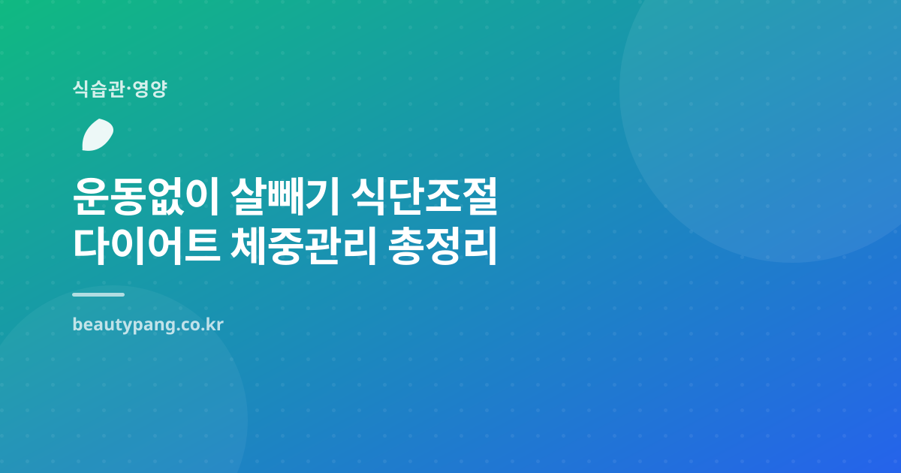

운동없이 기본만 지켜도 다이어트가 되는 방법이 있다면 믿으시겠습니까? 느린 식사법으로 운동없이 다이어트 하는 방식으로 건강에 해롭지도 않고 보다 날씬한 몸매를 만드는 방법이 있습니다. 체중 증가는 몸이 필요한 것보다 더 많은 양의 칼로리가 섭취되었을 때 나타나게 됩니다. 이 말으 뜻은 섭취된 칼로리를 태우거나 식사 및 간식으로 섭취하는 전체 칼로리를 줄어야 한다는 뜻입니다. 대부분의 사람들이 식단을 조절하여 섭취하는 칼로리를 줄이고 운동으로 칼로리 소모를 하여 체중 감량을 하고 있습니다. 규칙적인 운동을 하는 것은 체중 감량에 도움이 되긴 하지만 어떤 사람들에게는 건강 문제, 시간의 부족함, 혹은 운동에 관심이 없어 실천하기가 매우 힘들 수 있습니다. 운동을 통해서 칼로리를 태우는 것보다 식사로 섭취하는 칼로리를 줄이는 것이 더 쉬운 방법입니다. 오늘은 식단 및 라이프 스타일의 변화를 주어 운동없이 살빼기에 대하여 한 번 알아보도록 하겠습니다.
우리나라 사람들의 80%이상이 밥을 먹는 시간이 10분에서 15분이라는 연구결과가 있습니다. 이렇게 밥을 빨리 먹는 습관은 위암 발병률을 높일 뿐만 아니라 비만으로 가는 지름길이라고 합니다. 우선 우리가 밥을 빨리 먹기 위하여 골고루 씹지 않고 대충 삼키게 되면 위에 굉장한 부담이 간다고 합니다. 여기서 가장 큰 문제는 탄수화물 분해는 위에서 하는 역활이 아니기 때문에 더 문제가 된다고 합니다. 탄수화물은 대부분 침이나 혹은 췌장에서만 분해가 되는데 침속의 탄수화물이 분해를 잘 시키지 못한 상태로 위로 바로 내려보내면 위에 있던 음식이 오래 머물러 있어서 소화가 잘 되지 않을 뿐더러 변비증상도 악화되고 최악에는 위암을 유발할 수 있다고 합니다. 그렇기 때문에 식사를 할 때는 천천히 꼭꼭 씹어서 먹는것이 좋습니다. 의사들이 말을 하기로는 적당한 식사 시간은 보통 20분 이라고 합니다. 하지만 아무리 천천히 먹어도 너무 많이 음식을 섭취하게 되면 소용이 없다고 하니 적당한 양의 식사를 천천히 하는 것이 좋습니다.
대부분 알고 있다 시피 탄수화물의 섭취를 줄이고 단백질과 지방의 섭취를 늘리면 다이어트에 좋은 식단이 됩니다. 살을 빼고자 하면 사실 지방보다는 탄수화물을 멀리 해야 합니다. 지방만 체지방이 되는것이 아니라 탄수화물도 체지방이 되기 때문입니다. 여기서 주의하실 점은 신장이 좋지 않은 분들은 고단백 섭취가 독이 될 수도 있고 운동을 하시는 분은 흡수가 빠른형태의 보충제를 위주로 단백질을 섭취하는 경우에 신장에 부담을 줄 수 있다는 점을 기억하시면 좋을 것 같습니다.
식이섬유를 충분히 섭취하는 것만으로도 운동없이 살빼는데 큰 효과를 가져올 수 있습니다. 식이섬유는 칼로리가 낮고 포만감을 주어 음식 섭취를 줄여주며 소화과정이 길어지면서 추가적인 음식의 섭취도 줄일 수 있습니다. 그리고 소화를 통해서 에너지 소모를 유도하는 효능도 있습니다. 일일 14g의 식이섬유를 섭취하였을 때 체중이 0.8~2.4kg까지 감소하였다는 연구 결과도 있습니다.
저칼로리의 한 두개 가량의 간식을 식단에 포함하는 것은 체중 감량에 도움이 되는데 이는 보통의 경우 간식을 먹는 것이 감량을 돕기 때문입니다. 식사 5-6시간 사이가 간식을 먹기 알맞는 때인데 오랜 시간 동안 공복을 유지하면 지나친 허기감 때문에 오히려 계획한 식단 및 양을 지키기가 더 어려워질 수 있습니다. 체중 감량 식단에 포함된 대부분의 간식은 비록 간식일지라도 칼로리가 적은 것들입니다. 대표적인 건강한 간식은 견과류 ¼컵, 그릭 요커트 한 개, 삶은 달걀 및 샐러리 그리고 땅콩 버터가 있습니다.
수분 보충을 잘 해주는 것도 체중 감량에 아주 중요한 요소인데 목마름이 배고픔처럼 인식되어 더 많이 먹게 하기 때문입니다. 충분한 물을 마시는 것이 이러한 실수를 줄여서 성공적인 체중 감량에 도움이 될 수 있습니다. 1.5-2L 정도의 물이나 8잔의 설탕이 함유되어 있지 않은 순수한 물을 마시는 것이 좋습니다. 물, 무설탕의 인공 향이 가미된 음료, 설탕과 크림을 넣지 않은 차나 커피 등은 체중 감량에 도움이 되는 음료임을 기억하시는 것이 좋습니다.
우리 한국사람들의 입맛은 굉장히 쎈 편입니다. 즉 짜고 맵고 찐하게 먹는 다는 뜻입니다. 특히 짜게 먹으면 나트륨을 아주 많이 섭취한다는 소리인데 나트퓸은 인체에서 분명이 필요한 성분중에 하나이긴 하지만 필요 이상으로 몸에 많이 가지고 있을 경우 다양한 부작용을 초래 할 수 있습니다. 고혈압을 비롯하여 건강상에 좋지 않은 악영향들이 있겠지만 무엇보다 체중적인 부분에서도 생각보다 큰 문제를 가져 올 수 있습니다. 쉽게 설명하자면 체내에 나트륨이 많아지게 되면 우리몸은 인체내의 나트륨 농도를 너무 높이지 않기 위해서 많은 수분을 보유하게 됩니다. 이 말은 나트륨때문에 실제 내 몸무게보다 더 늘어나 있고 부어서 살찐 모습으로 있게 된다는 뜻입니다. 그렇기 때문에 덜 짜게 먹는 것을 선호합니다.
함께 보면 좋은 계산기